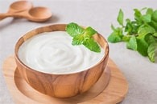
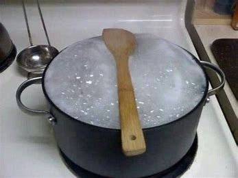
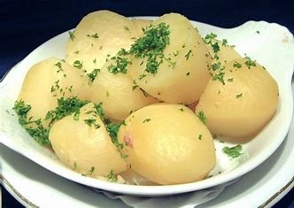
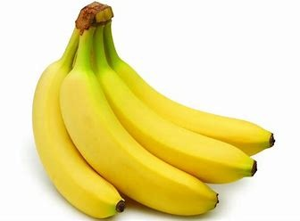
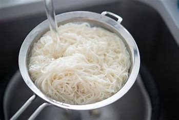

1.Salt is one thing that can set all the flavours perfectly.
2. But, altering a slight amount of salt can simply make your dish go wrong.
3. So, if you too unknowingly add extra salt to your food, then remember adding cream or yoghurt.
4.Adding a spoonful of yoghurt or salt neutralizes the effect of salt.
2.Place A Wooden Spoon Over The Milk Vessel

1.Almost all of us face a day when the milk starts overflowing in the kitchen while we get busy with other tasks.
2. Isn’t it? So, to make this easier for you, we suggest that you place a wooden spoon over the milk vessel.
3. Placing a wooden spoon will prevent the milk from spilling over the floor and making your kitchen dirty.
3. Reduce The Boling Time Of Potatoes By Poking Them

1.Another important kitchen hacks include knowing the boiling point of a lot of vegetables.
2.Here we have brought a useful tip which lets you reduce the boiling point of potatoes.
3. Sometimes potatoes may take a longer time to boil. However, poking the potatoes with a knife can be of help.
4. The holes created by poking let the potato boil at a faster rate.
4.Store Bananas Separately

1.Bananas tend to ripe easily as compared to other fruits.
2.This early ripening can sometimes affect other bananas too.
3.So, we advise you to store bananas separately.
4.If you want other fruits to ripen easily, you can simply place them in a rice drum.
5. This is an age-old practice to ripe the fruits.
5.Separate Noodle Strings By Placing Them Under Cold Water

1.If sticky noodles are becoming a matter of worry for you.
2.Then we are right here for your help. The next time you face this problem.
3.Just keep in mind to wash the boiled noodles in cold water.
4.Doing so will separate the noodle strings and also ensure that they don’t stick to each other.
COMMENT BOX
Enter your name